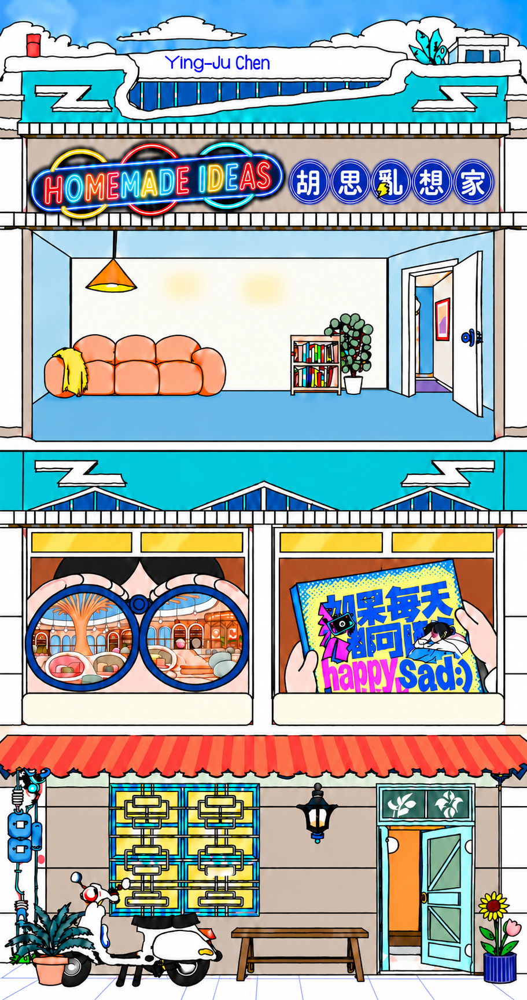

Home made ideas
ABOUT
Click for ideas
01 / Future studio
→
02 / Album design
→
CONTACT
Copyright © 2026 Ying-Ju Chen. All rights reserved.
×
Project window. Press Escape or Close to return. Drag the title bar on desktop.
HOMEMADE IDEAS
✦